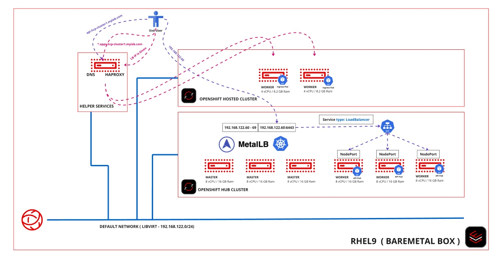

Explore the Deployment
This lab explores the building blocks of the hosted cluster using the cluster deployed and how everything works under the hood.
Explore The Control Plane
-
For each infrastructure environment there is a namespace with the same name, in this example it is
hcpbm.-
An agent resource represents each discovered node.
# oc get agent -n hcpbm NAME CLUSTER APPROVED ROLE STAGE 442b5079-f849-461a-af7d-0e74f584a9eb true auto-assign 686107da-eef0-4ab5-a2ee-37bd8196760b true auto-assign -
View the raw resource to get more details about each agent.
# oc get agent -n hcpbm 442b5079-f849-461a-af7d-0e74f584a9eb -o yaml apiVersion: agent-install.openshift.io/v1beta1 kind: Agent ...
-
-
For each hosted cluster, there are be three namespaces using cluster name in as part of its name. For example, if the cluster name is
hcp-cluster1:# oc get ns | grep cluster1 hcp-cluster1 Active 66s hcp-cluster1-hcp-cluster1 Active 57s klusterlet-hcp-cluster1 Active 55s -
Inspect the
hcp-cluster1namespace.-
It holds the hosted cluster resource that shows high level details of the cluster. As usual, there is more information on the raw resource, such as its cluster configuration details, than you see on the default output of
oc get.# oc get hostedcluster -n hcp-cluster1 NAME VERSION KUBECONFIG PROGRESS AVAILABLE PROGRESSING MESSAGE hcp-cluster1 hcp-cluster1-admin-kubeconfig Partial False False Waiting for Kube APIServer deployment to become available -
Inspect the
spec.etcdfield of a hosted cluster resource.# oc get hostedcluster -n hcp-cluster1 -o yaml ... etcd: managed: storage: persistentVolume: size: 8Gi type: PersistentVolume managementType: Managed ... -
Most of the details filled in the web UI during the hosted cluster creation can be found here.
-
This namespace also holds all the secrets associated with the hosted cluster. For example, its pull secret, ssh key, kubeadmin user password and also its installation kubeconfig file.
# oc get secret -n hcp-cluster1 NAME TYPE DATA AGE hcp-cluster1-admin-kubeconfig Opaque 1 142m hcp-cluster1-import Opaque 6 144m hcp-cluster1-kubeadmin-password Opaque 1 141m open-cluster-management-compliance-history-api-recorder kubernetes.io/service-account-token 4 144m pullsecret-cluster-hcp-cluster1 kubernetes.io/dockerconfigjson 1 144m sshkey-cluster-hcp-cluster1 Opaque 1 144m -
Inspect the node pool resource in this namespace.
# oc get nodepool -n hcp-cluster1 NAMESPACE NAME CLUSTER DESIRED NODES CURRENT NODES AUTOSCALING AUTOREPAIR VERSION UPDATINGVERSION UPDATINGCONFIG MESSAGE hcp-cluster1 nodepool-hcp-cluster1-1 hcp-cluster1 2 2 False False 4.16.43 False False # oc get nodepool nodepool-hcp-cluster1-1 -n hcp-cluster1 -o yaml ...
-
-
The
clustername-clusternamenamespace holds all the resources required for the hosted cluster. In this case, the namespace ishcp-cluster1-hcp-cluster1.-
List pods that run on this namespace and take care of various control plane functions of the hosted cluster.
# oc get po -n hcp-cluster1-hcp-cluster1 NAME READY STATUS RESTARTS AGE capi-provider-5745984c97-8pxxd 1/1 Running 1 (3m6s ago) 11m catalog-operator-6c9c8575f5-r846n 2/2 Running 0 7m37s ... packageserver-77d56b97c5-zjng6 2/2 Running 0 7m36s redhat-marketplace-catalog-c446c5f89-7sc5w 1/1 Running 0 7m24s redhat-operators-catalog-65c8c964bc-8pqnf 1/1 Running 0 7m24s -
Inspect the hosted cluster’s Etcd pods.
# oc get po -n hcp-cluster1-hcp-cluster1| grep etcd etcd-0 4/4 Running 0 11m etcd-1 4/4 Running 0 11m etcd-2 4/4 Running 0 11m -
Inspect the dynamically provisioned PVCs for Etcd, backed by the LVM storage operator.
# oc get pvc -n hcp-cluster1-hcp-cluster1 NAME STATUS VOLUME CAPACITY ACCESS MODES STORAGECLASS VOLUMEATTRIBUTESCLASS AGE data-etcd-0 Bound pvc-8e6967a1-b398-4794-b777-7d27dc680b8c 8Gi RWO lvms-vg1 <unset> 12m data-etcd-1 Bound pvc-86cc384a-71d6-4443-9ec2-9b74dcc254cd 8Gi RWO lvms-vg1 <unset> 12m data-etcd-2 Bound pvc-1831e4af-b73f-4d3e-96bd-625b445ebc78 8Gi RWO lvms-vg1 <unset> 12m # oc get pv | grep etcd pvc-1831e4af-b73f-4d3e-96bd-625b445ebc78 8Gi RWO Delete Bound hcp-cluster1-hcp-cluster1/data-etcd-2 lvms-vg1 <unset> 14m pvc-86cc384a-71d6-4443-9ec2-9b74dcc254cd 8Gi RWO Delete Bound hcp-cluster1-hcp-cluster1/data-etcd-1 lvms-vg1 <unset> 14m pvc-8e6967a1-b398-4794-b777-7d27dc680b8c 8Gi RWO Delete Bound hcp-cluster1-hcp-cluster1/data-etcd-0 lvms-vg1 <unset> 14m -
There are routes for OAuth, konnectivity, and ignition of the hosted cluster on the host cluster.
# oc get route -n hcp-cluster1-hcp-cluster1 NAME HOST/PORT PATH SERVICES PORT TERMINATION WILDCARD ignition-server ignition-server-hcp-cluster1-hcp-cluster1.apps.hub.mylab.com ignition-server-proxy <all> passthrough/None None konnectivity-server konnectivity-server-hcp-cluster1-hcp-cluster1.apps.hub.mylab.com konnectivity-server <all> passthrough/None None oauth oauth-hcp-cluster1-hcp-cluster1.apps.hub.mylab.com oauth-openshift <all> passthrough/None None -
Inspect the services associated with each route.
# oc get route -n hcp-cluster1-hcp-cluster1 oauth NAME HOST/PORT PATH SERVICES PORT TERMINATION WILDCARD oauth oauth-hcp-cluster1-hcp-cluster1.apps.hub.mylab.com oauth-openshift <all> passthrough/None None # oc get route oauth -n hcp-cluster1-hcp-cluster1 -o yaml ... spec: host: oauth-hcp-cluster1-hcp-cluster1.apps.hub.mylab.com tls: insecureEdgeTerminationPolicy: None termination: passthrough to: kind: Service name: oauth-openshift weight: 100 wildcardPolicy: None # oc get svc oauth-openshift -n hcp-cluster1-hcp-cluster1 -o yaml ... selector: app: oauth-openshift hypershift.openshift.io/control-plane-component: oauth-openshift -
The route refers to pods , named
oauth-openshift, running on the hosted cluster namespace. So any attempt to access the OAuth route hits these pods in the hosted cluster namespace.# oc get po -n hcp-cluster1-hcp-cluster1 -l app=oauth-openshift NAME READY STATUS RESTARTS AGE oauth-openshift-6fc8bbc966-422rl 4/4 Running 0 64m oauth-openshift-6fc8bbc966-84mrv 4/4 Running 0 64m oauth-openshift-6fc8bbc966-xnxkw 4/4 Running 0 64m -
Inspect the Konnectivity route and Ignition route in a similar manner.
-
Inspect the agent cluster resource in this namespace
# oc get agentcluster -n hcp-cluster1-hcp-cluster1 NAME AGE hcp-cluster1 146m # oc get agentcluster -n hcp-cluster1-hcp-cluster1 -o yaml apiVersion: v1 items: - apiVersion: capi-provider.agent-install.openshift.io/v1beta1 ...
-
Explore API Access to a Hosted Cluster
-
The following shows how API access reaches hosted clusters, that is, its Kubernetes API pods running in their host cluster, with the help of the MetalLB operator, which enables load balancer services on a bare metal or platform-agnostic OpenShift cluster.
-
DNS resolves
api.hcp-cluster1.mylab.comto 192.168.122.60. -
The MetalLB range is configured to 192.168.122.60 - 192.168.122.69. We know MetalLB assigns IP addresses to services sequentially, for example the first IP address for the first cluster, and second IP address for the second cluster. That is why we configure the API hostname for
hcp-cluster1to 192.168.122.60 and forhcp-cluster2to 192.168.122.61.# oc get ipaddresspool -n metallb-system NAME AUTO ASSIGN AVOID BUGGY IPS ADDRESSES hcp-ip-pool true true ["192.168.122.60-192.168.122.69"]There is NOT a better way to predict IP address allocation, at this time. Improvements, such as integration DNS services and annotations to set a fixed IP address on a hosted cluster resource, are still work-in-progress. -
MeatlLB attaches that IP address on one of the master nodes on the host cluster. You can verify this via the
arpingcommand. Look at the MAC address assigned to that IP address, and compare it with the MAC address of your control plane nodes.# arping 192.168.122.60 -I virbr0 ARPING 192.168.122.60 from 192.168.122.1 virbr0 Unicast reply from 192.168.122.60 [52:54:00:E2:54:32] 6.625ms -
The host assigns the IP address 192.168.122.60 to a load balancer service, which listens on port 6443, and connects to the
kube-apiserverpods of the hosted cluster runs.# oc get svc -n hcp-cluster1-hcp-cluster1 kube-apiserver NAME TYPE CLUSTER-IP EXTERNAL-IP PORT(S) AGE kube-apiserver LoadBalancer 172.30.168.59 192.168.122.60 6443:30447/TCP 105m # oc get svc -n hcp-cluster1-hcp-cluster1 kube-apiserver -o yaml ... selector: app: kube-apiserver hypershift.openshift.io/control-plane-component: kube-apiserver # oc get po -n hcp-cluster1-hcp-cluster1 -l app=kube-apiserver NAME READY STATUS RESTARTS AGE kube-apiserver-69794fffb6-4mgrp 4/4 Running 0 108m kube-apiserver-69794fffb6-5wbpm 4/4 Running 0 108m kube-apiserver-69794fffb6-dwl2x 4/4 Running 0 108m
-
Explore a Hosted Cluster
-
Login to the hosted cluster API to explore some details. You can get its kubeadmin user password and web console URL from web console of its host cluster, as demonstrated on the previous lab.
# oc login https://api.hcp-cluster1.mylab.com:6443 -u kubeadmin -
Explore the pods running on the
kube-systemnamespace in the hosted cluster.# oc get po -n kube-system NAME READY STATUS RESTARTS AGE konnectivity-agent-25r69 1/1 Running 0 111m konnectivity-agent-drmg7 1/1 Running 0 111m kube-apiserver-proxy-c1worker1 1/1 Running 0 109m kube-apiserver-proxy-c1worker2 1/1 Running 0 109mNotice the lack of typical control plane pods, such as Etcd and API server, which run on the host cluster.
-
Each worker node runs a
konnectivitypod andkube-apiserver-proxypod. -
Each Konnectivity pod runs a Konnectivity proxy agent that opens a tunnel from its worker node to the control plane on its host cluster. This enables bidirectional communication between each worker node and its control plane.
# oc project kube-system Now using project "kube-system" on server "https://api.hcp-cluster1.mylab.com:6443". # oc rsh konnectivity-agent-25r69 ... sh-5.1$ ps aux | grep konnectivity 1000 1 0.1 0.2 1763736 24344 ? Ssl 05:05 0:09 /usr/bin/proxy-agent --logtostderr=true --ca-cert /etc/konnectivity/ca/ca.crt --agent-cert /etc/konnectivity/agent/tls.crt --agent-key /etc/konnectivity/agent/tls.key --proxy-server-host konnectivity-server-hcp-cluster1-hcp-cluster1.apps.hub.mylab.com --proxy-server-port 443 --health-server-port 2041 --agent-identifiers=default-route=true --keepalive-time 30s --probe-interval 5s --sync-interval 5s --sync-interval-cap 30s --v 3 -
Note the URL on the
--proxy-server-hostoption in the output above, which iskonnectivity-server-hcp-cluster1-hcp-cluster1.apps.hub.mylab.com. This URL targets a route running on the host cluster and forwards requests to the Konnectivity pods running on host/hub cluster. -
The
kube-apiserver-proxypods enables other pods on the same worker node to access the hosted cluster API, without explicitly addressing their host/hub cluster. Only this pod needs connectivity to the host cluster.Other pods can submit Kubernetes API requests via this pod, preserving local cluster connectivity through cluster IP services between pods and the Kuberenetes API of their own cluster.
-
This pod runs HAproxy to forward API requests from ip 172.20.0.1:6443, which is an in-cluster private IP address, to the remote API server running on the host/hub cluster, which is
api.hcp-cluster1.mylab.com.# oc rsh kube-apiserver-proxy-c1worker1 ... sh-5.1$ ps aux | grep ha 1001 1 0.1 0.1 240048 13260 ? Ssl 05:04 0:11 haproxy -f /usr/local/etc/haproxy sh-5.1$ cat /usr/local/etc/haproxy/haproxy.cfg global maxconn 7000 log stdout local0 log stdout local1 notice defaults mode tcp timeout client 10m timeout server 10m timeout connect 10s timeout client-fin 5s timeout server-fin 5s timeout queue 5s retries 3 frontend local_apiserver bind 172.20.0.1:6443 log global mode tcp option tcplog default_backend remote_apiserver backend remote_apiserver mode tcp log global option httpchk GET /version option log-health-checks default-server inter 10s fall 3 rise 3 server controlplane api.hcp-cluster1.mylab.com:6443
Explore Ingress for Hosted Clusters
-
The ingress pods run on the hosted cluster worker nodes, alongside user workloads, and are routed directly to those pods by an external load balancer. Ingress for the application running on a hosted cluster does NOT pass through its host cluster.
-
See that
console-openshift-console.apps.hcp-cluster1.mylab.comresolves to 192.168.122.49.# nslookup console-openshift-console.apps.hcp-cluster1.mylab.com Server: 192.168.122.21 Address: 192.168.122.21#53 Name: console-openshift-console.apps.hcp-cluster1.mylab.com Address: 192.168.122.49 -
Inspect the
/etc/haproxy/haproxy.cfgfile, on the helper VM, to see that anything that comes to 443 port of 192.168.122.49 is sent to one of the worker nodes for the hosted cluster.#------------------- HCP-Cluster1 APPS - HTTPS ----------------------------# frontend hcp_cluster1_apps_https bind 192.168.122.49:443 use_backend hcp_cluster1_apps_https_backend mode tcp backend hcp_cluster1_apps_https_backend balance roundrobin mode tcp server worker1 192.168.122.41:443 check server worker2 192.168.122.42:443 check server worker3 192.168.122.43:443 checkNotice that you must configure both the libvirt default network on the bare metal host and HAproxy on the helper VM of your PoC environment to match the number of hosted clusters you intend to create. This is not really different than any other bare metal deployment of OpenShift.
-
The ingress pods run on worker nodes of their own hosted clusters, just like with regular OpenShift clusters: infrastructure workloads run on worker nodes, and optionally on segregated infrastructure nodes, but not on control plane nodes.
# oc get po -n openshift-ingress NAME READY STATUS RESTARTS AGE router-default-569b6445f5-fvd2g 1/1 Running 0 121m router-default-569b6445f5-vz8ss 1/1 Running 0 121m -
Notice that, though the OpenShift web console is exposed through the ingress of its own hosted cluster, and its console pods also run on its own hosted cluster worker nodes, end users still require access to the ingress of its host cluster. The OpenShift Authentication operator and its OAuth pods are control plane services, which run on the host cluster, and are exposed by the host cluster ingress. The redirection to OAuth fails if end users do not have access to the ingress of the host cluster.